FM1 Move
An eight-track groovebox for the M-VAVE FM-1. Any track can be a synth or a drum machine, every pattern can breathe with the Groove Engine, and every function is one press away.
Quick start 5 MINUTES
From a fresh install to your first eight-track loop. Everything here also works in the browser simulator (keyboard: Z…M and Q…U are the keys, F1…F12 the buttons, Space PLAY).
- Switch on and press PLAYA new project already has eight tracks: drums on 1 and 7, bass, chords, lead, pad, pluck and keys on the others. The PLAY light flashes on every beat. Press PLAY again to stop.
- Pick a track, play itTurn SELECT — one detent, one track (or hold SEL and press white key 1–8). The keys now play that track. Turn PRESETS for another sound (on a drum track: another kit).
- Write a beat without recordingSelect track 1 (drums). Play the kick once on the keys, then hold SEQ and tap white keys 1, 5, 9, 13. Play the snare, hold SEQ, tap 5 and 13. Tap the same key again to remove a step.
- Record a basslineSelect track 2, press PLAY, then REC: what you play is recorded at once and every pass adds on top. Press REC again to stop recording. Made a mistake? EDIT + OCT− undoes it.
- Give it a groovePress ARP (the GROOVE screen). Turn ALGORITHM for a template (MPC 16, HOUSE, UK GARAGE…), KNOB 1 for swing, KNOB 4 for a human feel.
- Mix and performPress GLO (MIXER): KNOB 1–4 are volume, pan, reverb, delay of the selected track. Hold GLO and press keys 1–8 to mute, 9–16 to solo. Hold FX and press a key for a punch-in effect.
- Keep itStop, leave the FM-1 alone 2.5 s: the autosave keeps your work, even through a power-off. To keep a version: hold HOME (PROJECT), pick a slot with ALGORITHM, press SAVE.
The panel
Two rows of buttons, one meaning each: the top row is sound and mix, the bottom row is time and arrangement. Tap a button to open its screen; hold it and touch keys or knobs for its layer. The lit button always says where you are.
Always available
| Control | What it does |
|---|---|
| SELECT | Selects track 1–8, one detent each (no wrap). With any function button held: the tempo, one BPM a detent. |
| PRESETS | The selected track's sound — factory sounds, then your user presets. On a drum track: the kit. |
| ALGORITHM | The screen's navigator: step page, groove template, engine, list row. |
| KNOB 1–4 | The four values at the bottom of the screen. Turning one shows it large for a moment (the focus overlay). Fast turns go further. |
| OCT− / OCT+ | Octave of the keys (both together: back to 0). On a drum track, held while playing: ghost / hard hits. |
| PLAY · REC | Start / stop all eight tracks · record (see Recording). |
| EDIT + OCT− / OCT+ | Undo / redo. |
| MASTER | The volume. |
The screens
Ten screens, each one press away; pressing the button of the screen you are on turns its page. These pictures are drawn by the firmware's own code.
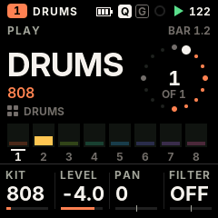
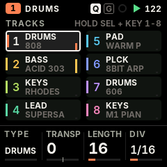
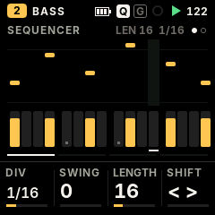
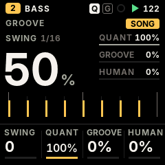
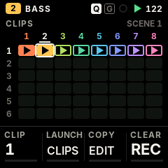
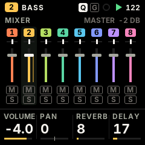
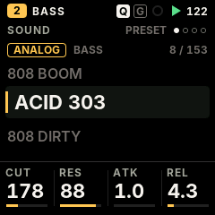
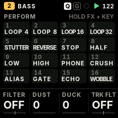
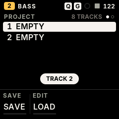
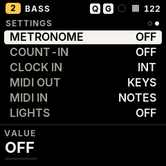
The knobs on each screen
| Screen | ALGORITHM | KNOB 1 | KNOB 2 | KNOB 3 | KNOB 4 |
|---|---|---|---|---|---|
| PLAY (synth) | — | the sound's four macros (they change with the engine) | |||
| PLAY (drums) | — | KIT | LEVEL | PAN | FILTER |
| TRACKS | — | TYPE (asks; SEL confirms) | TRANSPOSE | LENGTH | DIV |
| SEQUENCER | step page | DIV | SWING | LENGTH | SHIFT |
| GROOVE | template | SWING | QUANTIZE strength | GROOVE amount | HUMANIZE |
| MIXER | — | VOLUME | PAN | REVERB | DELAY |
| SOUND · PRESET | engine | the four macros | |||
| SOUND · ENV | — | ATTACK | DECAY | SUSTAIN | RELEASE |
| SOUND · LFO | — | RATE | WAVE | to PITCH | to FILTER |
| SOUND · SENDS | — | DRIVE | CHORUS | DELAY | REVERB |
| PERFORM | — | DJ FILTER | DUST | DUCK | TRACK FILTER |
| PROJECT | slot 1–4 | buttons: SAVE save · EDIT load · REC delete (each asks when it would lose something) | |||
| SETTINGS | row | VALUE | — | ||
Layers: hold a button, touch a key
While a function button is held, the 16 white keys and the four knobs do that button's job. Let go and the keys play notes again. A button you held and used does not open its screen.
| Hold | The keys | The knobs |
|---|---|---|
| FX | 16 punch-in effects on the whole mix, while the key is held | DJ FILTER · DUST · DUCK · TRACK FILTER |
| SEQ | white keys 1–16: write / clear steps of the page · first four black keys: pages 1–4 | NOTE (or drum sound) · DIV · SWING · LENGTH |
| SEQ + a step key held | — | NOTE / sound · LEVEL · RATCHET · NUDGE; PRESETS: lock value; ALGORITHM: lock parameter; OCT+: fill condition; OCT−: clear nudge, locks, condition |
| EDIT | erase that note / drum sound as the loop plays (stopped: from the whole pattern) | SHIFT · LENGTH ×2 / ½ · TRANSPOSE; OCT− undo, OCT+ redo |
| ARP | note repeat (roll) at the rate, recorded as ratchets | KNOB 1: RATE 1/8 … 1/64 |
| SEL | white keys 1–8: select track · keys 9–16 and black keys: the key (root) of the song | CHORD · SCALE · KEYS (snap) · TRANSPOSE |
| GLO | keys 1–8 mute, 9–16 solo · black keys: C# fill while held, D# fill on the next bar, F# tap tempo | VOLUME · PAN · REVERB · DELAY of the selected track |
| Any button | — | SELECT: the tempo, one BPM a detent |
GLO held
The 16 punch-in effects (FX held, white keys 1–16)
Loops of 1/4, 1/8, 1/16 and 1/32 · stutter · reverse · tape stop · half speed · low-pass and high-pass sweeps · phone · bit crush · alias · gate · echo · tape wobble. All locked to the tempo; the mix is exactly dry again when you let go.
Eight tracks
Every track is independent and has no fixed role. Each one is a synth or a drum track (any number of drum kits at once), with its own pattern, length, division, level, pan, sends, filter, groove and mute / solo. Each track has its colour everywhere.
The new-project layout above; change anything.
Change a track's kind
On TRACKS (SEL), turn KNOB 1: the screen asks "TRACK 2 TO DRUMS? — its pattern is cleared". Press SEL to confirm, anything else to cancel.
Heavy engines
The GRAIN, FM6 and PHYS engines each need a big memory area; three are available. A fourth heavy engine is refused with a message ("HEAVY ENGINES ALL IN USE") until one of them changes engine; a project that asks for more loads them as ANALOG and says "HEAVY ENGINES: 3 MAX".
Mute, solo, mix
Hold GLO: keys 1–8 mute tracks 1–8, keys 9–16 solo them. The MIXER screen (tap GLO) sets the selected track's volume, pan, reverb and delay sends; choose the track with SELECT.
NEXT MIDI-out tracks (a track that plays an external synth) and a MIDI channel per track.The sequencer
Up to 64 steps per track, each track with its own length and division — polymeters stay in phase on one sample-accurate clock, with no drift.
Write steps (no recording needed)
- Select the track, play the note or chord you want (on a drum track: the sound) — or hold SEQ and turn KNOB 1 to pick it.
- Hold SEQ and tap white keys 1–16: each writes that step of the page. Tap a lit step again to clear it.
- Longer patterns: with SEQ held, OCT− / OCT+ or the first four black keys change the page; on the SEQUENCER screen, ALGORITHM.
While SEQ is held the keys' lights show the steps of the page and the playhead.
Edit a step
Hold SEQ, then hold a step's key (or several), and turn:
| Control | On the held steps |
|---|---|
| KNOB 1 | Note (synth) or drum sound |
| KNOB 2 | Level: ghost, soft, normal, hard |
| KNOB 3 | Ratchet ×1 – ×4 |
| KNOB 4 | Nudge (micro timing): half a step early to half a step late, in 1/64 |
| PRESETS / ALGORITHM | Parameter lock: ALGORITHM picks a sound parameter (the one you touched last first), PRESETS gives it a value for this step only. 24 locks per track. |
| OCT+ | Fill condition: normal → fill only → no fill |
| OCT− | Clear the step's nudge, locks and fill condition |
Pattern tools
- Length and division: SEQUENCER KNOB 3 (1–64 steps) and KNOB 1 (1/32 to 2 bars, triplets included).
- Swing: SEQUENCER KNOB 2, MPC style, 0 (straight) to 100.
- Shift: SEQUENCER KNOB 4, or EDIT held + KNOB 1.
- Length ×2 / ½ and transpose: EDIT held + KNOB 2 / KNOB 3.
- Erase: EDIT held + the key of a note or drum sound removes it as the loop plays it; stopped, from the whole pattern.
- Fills: steps marked "fill only" play only during a fill; GLO held + C# plays a fill while held, + D# fills the next bar.
- Undo / redo: EDIT + OCT− / OCT+.
Chords and the key
Steps hold chords of up to four notes. Hold SEL: white keys 9–16 and the black keys set the key of the song; the knobs set chord mode (one key plays a triad, 7th, 9th, sus4 or power chord of the scale), the scale (16, from major and minor to blues and whole tone), key snapping (off, snap, scale on the white keys) and transpose. In chord mode the black keys change the chord while it is held.
Recording
- Playing: REC records at once; every pass is added on top (overdub). Notes land where you heard them — the keys' latency is taken back.
- Stopped: REC arms (its light flashes); your first note — or PLAY — starts the loop and the recording.
- Stop recording: REC again ("REC OFF").
- Note repeat: hold ARP and hold keys: rolls at the rate of KNOB 1, recorded as ratchets.
- Drums with dynamics: hold OCT− / OCT+ while you play for ghost / hard hits; every hit keeps its level.
- Timing is kept: the recorded deviation of every note stays with it, so the Groove Engine's quantize can be changed at any time.
The Groove Engine NEW
Quantize without losing your timing, templates of famous feels, swing, micro timing and a human touch — all non-destructive, per track or for the whole song.
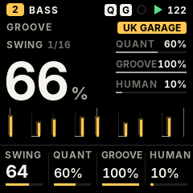
| Control | GROOVE screen (ARP) |
|---|---|
| ALGORITHM | Template: STRAIGHT, MPC 16, HOUSE, UK GARAGE, BROKEN, ROLLING, LATIN, USER. Choosing one also sets its swing. |
| KNOB 1 | Swing, 0–100 |
| KNOB 2 | Quantize strength: 100 % on the grid, 0 % exactly as played |
| KNOB 3 | Groove amount: how much of the template's timing and accents |
| KNOB 4 | Humanize: small timing and velocity variations |
- Non-destructive: what you played is kept; quantize, template and humanize act as it plays and can change any time, even while playing.
- Per track or song: tracks follow the song's groove until you edit a track's groove — then it has its own.
- Humanize repeats: the variations are the same every loop and after saving, so a take you like stays as it is.
- Swing once: swing shapes the grid; templates add only what swing does not, so nothing is moved twice.
Sounds and engines
Twelve synth engines and 153 factory sounds, all level-matched, plus 37 drum kits — SLOOP's sound, all of it.
Engines
ANALOG · DIGITAL (4-op FM) · PHASE · LOFI · SAMPLE · VOICE · TRIO · WHEEL (organ) · GRAIN · FM6 (6-op, DX7 patches) · PHYS (physical models) · NOISEPer sound
Envelope, LFO, arpeggiator, glide and voice modes (poly, mono, legato, unison), drive, slicer, chorus / delay / reverb sends, a filter per trackDrums
37 kits (a sampled acoustic kit in 5 treatments, 32 synthesised from 808 to techno), SYN1–4 synthesised user kits, USR1–3 sample kits; 16 sounds on the white keysOn the panel
- PRESETS browses sounds by kind, then your user presets; on a drum track, the kits.
- SOUND (EDIT): ALGORITHM picks the engine; the knobs are the engine's four macros. Tap EDIT again for ENV, LFO and SENDS.
- ENV and LFO jump straight to those pages.
- PLAY shows the macros too, so the sound is always under your hands.
Everything else, from the device page WEB
Some parameters have no panel page yet. The device page reaches every parameter of every track: the eight engine parameters, envelope destinations, the rest of the LFO, the slicer, the arpeggiator, voice mode and glide, strum and voice leading, the global delay, reverb and chorus, and the tempo.
Master
PERFORM (FX): DJ filter (low-pass ← off → high-pass), DUST (an old sampler and a record: bits, rate, crackle), DUCK (the kick pumps the synths), and the selected track's filter. An output limiter keeps the mix safe.
Projects and saving
- Autosave: stop and leave the FM-1 alone for 2.5 s: the working project is kept in flash (at most every 20 s). At power-on FM1 Move comes back exactly as you left it.
- Four project slots: hold HOME for PROJECT. ALGORITHM picks the slot; SAVE saves (asks before overwriting), EDIT loads (asks, the working project is replaced), REC deletes (asks). Stop the transport first.
- Format: FM1M — eight tracks, every parameter, the steps that hold anything, locks, nudges, fills and the groove. A save cut off by power loss leaves the previous version intact.
- From SLOOP: at the first start, SLOOP's working project is imported onto tracks 1–4. SLOOP's four saved slots are not imported yet.
- On the computer: the device page exports and imports single projects (
.fm1m.json) and makes a full backup.
Settings
Hold HOME (0.7 s) for PROJECT, hold it again for SETTINGS; tap HOME to leave. ALGORITHM picks the row, KNOB 1 changes it. Settings are kept in flash when the FM-1 is stopped.
| Row | Values | What it does |
|---|---|---|
| CLOCK IN | INT · USB · TRS | Follow your own tempo, or a DAW / drum machine's MIDI clock (start, stop, continue, tempo) |
| MIDI OUT | KEYS · SEQ | The keys always go out; SEQ also sends the sequencer, the arp and the rolls |
| MIDI IN | NOTES · CLOCK | CLOCK: follow the clock and ignore incoming notes |
| LIGHTS | OFF · LOW · MID · HIGH | Every button glows for playing in the dark; what is active stays fully lit |
| KEY LIGHTS | OFF · C KEYS · WHITE · ALL | Which keys glow too |
| USB AUDIO | MAIN · FULL | The USB audio level follows MASTER, or a fixed full level |
| VERSION | — | FM1 MOVE 0.1 |
MIDI and USB
- USB MIDI in and out, class compliant (no driver), and the 3.5 mm TRS MIDI IN jack (with a TRS-to-DIN adapter).
- Channels in: channel 1–8 plays synth track 1–8; the drum channel (10, changeable on the device page) plays drum track 1; any other channel plays the selected track.
- MIDI CCs: 7 level, 10 pan, 74 filter, 71 resonance, 73 / 75 / 72 attack / decay / release, 5 glide, 91 / 93 / 94 the reverb, chorus and delay sends.
- Clock in: USB or TRS (SETTINGS › CLOCK IN), pulse by pulse with no drift.
- USB audio: the FM-1 is also a USB audio input (44.1 or 48 kHz stereo) — record it in a DAW or a phone over the same cable.
The device page
nicodesy06.github.io/FM1-MOVE/device — Chrome or Edge on a computer, the FM-1 on a USB data cable. Every tab also works on the virtual FM1 (the firmware running in the browser), without a device.
Install
FM1 Move (experimental, behind a warning you must tick), SLOOP 2.5 (stable), or back to the official V15 with M-VAVE's own file.Tracks & sounds
The eight tracks; engine, sound or kit; every parameter of the track and the song (those the panel does not reach are marked "web only").User presets
Store a track's sound in one of 32 slots, load, rename, erase, export and import them.Samples & kits
Three sample slots (USR1–3, about 3.7 s each). Build a drum kit by dropping sounds on 16 pads, or a multi-sampled instrument — WAV, MP3, AIFF…FM6 patches
Load DX7 cartridges or single voices (.syx) into the bank B1–B27; export the bank.Projects & backup
Load, save, export, import and clear projects; one file backs up everything and puts it back.Install
- Open the device page in Chrome or Edge on a computer. Connect the FM-1 directly with a USB data cable; close other apps that use MIDI.
- If your FM-1 runs SLOOP and you have work on it, save a backup with SLOOP's editor first (FM1 Move reads SLOOP's working project, not its backup files).
- Go straight to Install — you don't need Connect to install, whatever firmware the FM-1 runs now (Connect is for managing an FM-1 that already runs FM1 Move). Read the warning, tick it, press Install FM1 Move, allow MIDI when the browser asks. Do not unplug while it writes.
- The FM-1 restarts into FM1 Move. Connect it on the page to see its version.
Recovery
FM1 Move keeps SLOOP's update loader and rescue paths unchanged.
| Situation | What to do |
|---|---|
| An install was cut off | The FM-1 stays in update mode. Plug it back in and press the same Install button again: it finishes. |
| The firmware does not start | Hold OCT− while switching on (USB rescue), then install SLOOP or FM1 Move from the device page. Two failed starts in a row open the rescue by themselves. |
| Back to SLOOP | Device page › Install SLOOP. |
| Back to the official firmware | Device page › Back to the official firmware (V15), with M-VAVE's unmodified FM-1.fwsc. |
| Nothing starts at all | Recovery needs FM-1-transporter. |
Coming from SLOOP
- Every engine, sound and sequencer feature of SLOOP 2.5 is still there; the panel is new and has eight tracks of any kind.
- SEL held + keys 1–8 now selects tracks (the song key moved to keys 9–16 and the black keys); GLO held: keys 1–8 mute, 9–16 solo, fill and tap tempo on black keys.
- SLOOP's song mode (sections A–D, chains, SONG REC) is gone; clips and scenes replace it in the next milestone.
- Sample slots: three (USR1–3). SLOOP's USR4 flash now holds FM1 Move's projects.
- The visualiser, colour palettes, zoom and the calibration page are gone from the panel.
The full list, feature by feature: what was kept, changed and removed.
Questions
Can I write a sequence without recording?
Yes: hold SEQ and tap the white keys — see The sequencer.
How do I set an exact tempo?
Hold any function button and turn SELECT (one BPM a detent), or tap the tempo with GLO held + F#, or set BPM on the device page.
Why does a fourth GRAIN / FM6 / PHYS track not get its engine?
Three heavy engines can run at once; change one of them to free its memory.
Where are my SLOOP projects?
The working one is imported at the first start. The four saved slots stay in flash, untouched; importing them is planned.
Does the device page send my files anywhere?
No. Everything happens between the browser and the FM-1 over USB; the virtual FM1 keeps its data in your browser only.